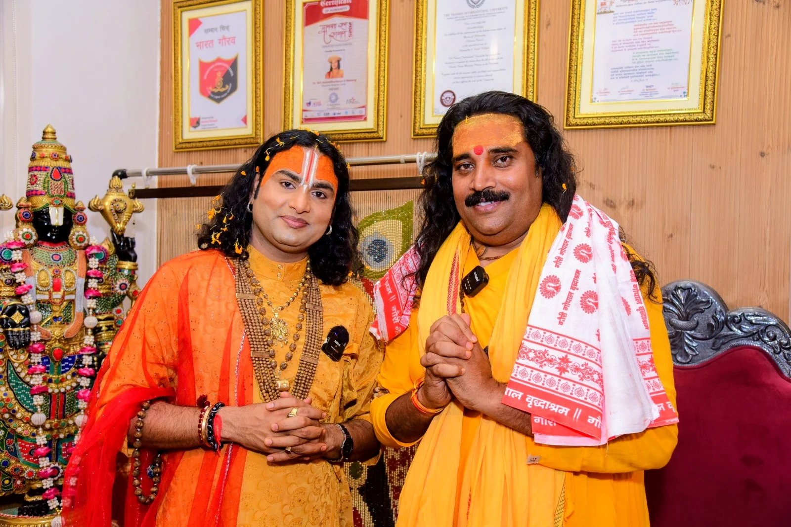
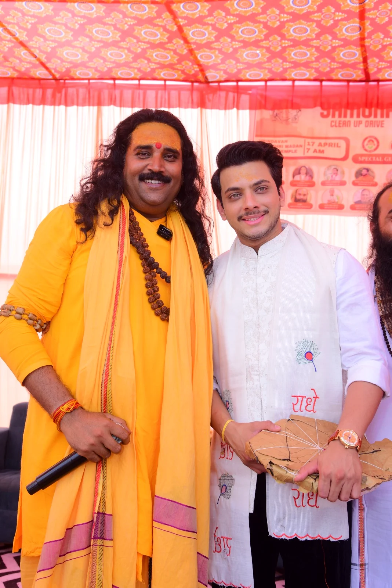
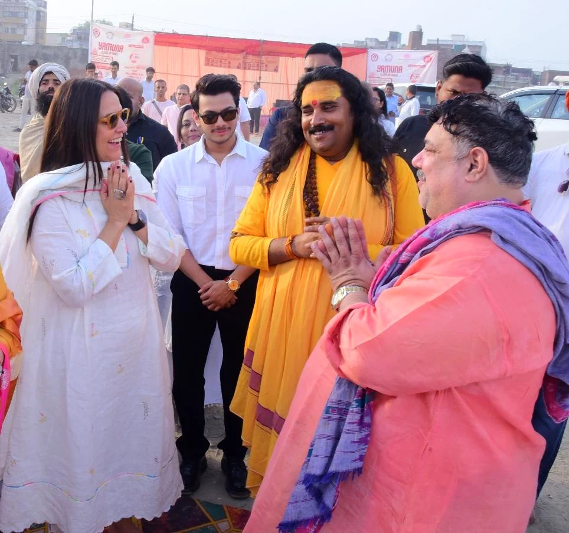
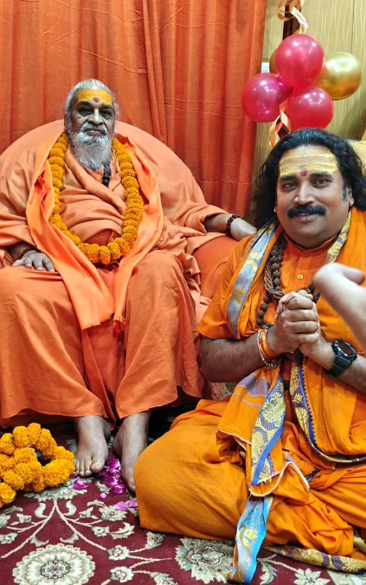

गैलरी
परिवार के क्षण।
सच्चे दिन, सच्ची सेवा, सच्चे लोग। कोई स्टॉक तस्वीर नहीं, कोई उधारी कहानी नहीं।










इस सेवा के और क्षण शीघ्र जोड़े जाएँगे।
गैलरी
सच्चे दिन, सच्ची सेवा, सच्चे लोग। कोई स्टॉक तस्वीर नहीं, कोई उधारी कहानी नहीं।




इस सेवा के और क्षण शीघ्र जोड़े जाएँगे।